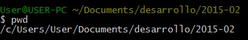
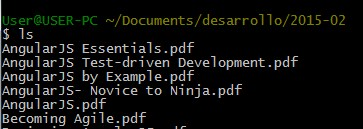
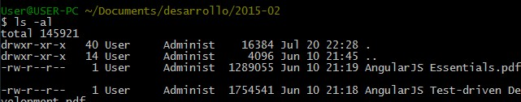
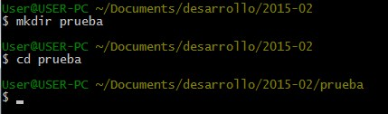
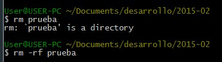
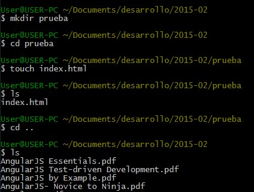
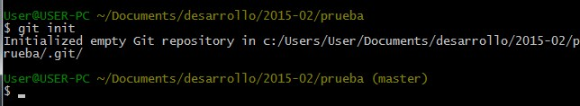
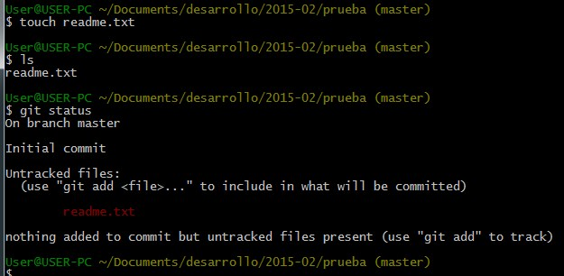
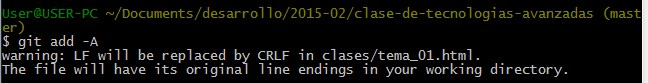
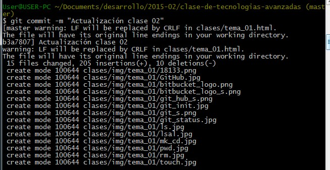

Repositorio - Para hoy
- Introducción control de versiones
- Algunos comandos unix
- Algunos comandos git
- Permisos sobre un repositorio
Repositorio - Herramientas
Lugar de almacenamiento "centralizado" donde se almacenan las diferentes versiones de un proyecto, con perfiles de acceso sobre los recursos compartidos
Concurrent Versions System (CVS)
Pros
- Ha estado en uso desde hace muchos años y se considera una tecnología madura
Concurrent Versions System (CVS)
Contras
- Mover o renombrar archivos no incluye una actualización de versión
- Riesgos de seguridad, con enlaces simbólicos
- No hay soporte para operaciones atomicas, lo cual ocasiona corrupcione en los archivos originales
- Operaciones entre ramas son costosas, no fue diseñada para sobortar ramas a largo plazo.
Apache Subversion (SVN)
Pros
- Nuevo sistema basado en CVS
- Incluye operaciones atómicas
- La operación entre ramas es económica
- Gran variedad de plug-ins para IDEs
- No usa modelo peer-to-peer
Apache Subversion (SVN)
Contras
- Todavia contiene bugs, renombrando archivos o directorios
- Los comandos para administrar el repositorio son insuficientes
- Lento en comparación de velocidad
Mercurial
Pros
- Más fácil de aprender que Git
- Mejor documentación
- Modelo distribuido
Mercurial
Contras
- No se pueden mezclar dos padres
- Se basa en extensiones y no en scripting
- Menos poder fuera de la caja
Git
Pros
- Se puede desarrollar sin la necesidad de conexión a internet
- Excelente para aquellos que odian CVS/SVN
- Incremento dramatico en la velocidad de operación
- Operación entre ramas económica
- Árbol historico completo disponible offline
- Modelo distribuído, peer-to-peer
Git
Contras
- Curva de aprendizaje para los que estan acostumbrados a SVN
- No es optimo para desarrolladores individuales
- Soporte para windows limitado, en comparación con linux
Repositorio - Herramientas
Proveedor de servicio: Plataforma que esta montada por lo general en la nube la cual ofrece servicios para almacenar archivos permitiendo controlar las versiones que se crean sobre estos.
Git:La herramienta git, viene preinstalada en terminales linux, por tanto si trabaja en ubuntu, apple, etc, no es necesario instalar ninguna herramienta adicional. Si trabaja en windows es necesario instalar git bash. (Se recomienda trabajar con la versión de línea de comandos)
Git Hub
Servicio público gratuito, todo el código puede ser consultado y usado segun los términos de licencia. Se puede comparar con una red social de desarrolladores que desarrollan proyectos open source.
Bitbucket
Tiene la opción de publicar un proyecto público o privado, en su versión gratuita se puede trabajar en equipos de hasta cinco personas.
Unix - Comandos (Generalidades)
pwd: Retorna la ubicación actual

Unix - Comandos (Generalidades)
ls: lista los archivos del directorio actual

Unix - Comandos (Generalidades)
ls -al: Extiende la funcionalidad de listar, permitiendo ver el detalle del contenido de la carpeta, incluyendo archivos ocultos.

Unix - Comandos (Generalidades)
clear: Limpia la terminal de comandos.
Unix - Comandos (Generalidades)
mkdir: Crea un directorio.
cd: Ingresa o sale de un directorio.

Unix - Comandos (Generalidades)
rm: Borra archivos o carpetas (Para borrar un directorio este debe esar vacio).
rm -rf: Borra recursivamente el contenido de una carpeta

Unix - Comandos (Generalidades)
touch: Crea un archivo vacio.

Git - Comandos (Repositorio)
git init: Crea un repositorio vacio.

Git - Comandos (Repositorio)
git status: Informa el estado actual del repositorio.

Git - Comandos (Repositorio)
git add: Agrega archivos al repositorio.

Git - Comandos (Repositorio)
git commit: Reporta el detalle del cambio, crea un registro o punto de referencia (chekpoint).

Git - Comandos (Repositorio)
git commit: Reporta el detalle del cambio, crea un registro o punto de referencia (chekpoint).